library(tidyverse)
x = seq(-3,3)
y = 2-0.5*x
datos = data.frame(x, y)
datos %>% ggplot(aes(x=x, y=y))+
geom_line()+theme_bw()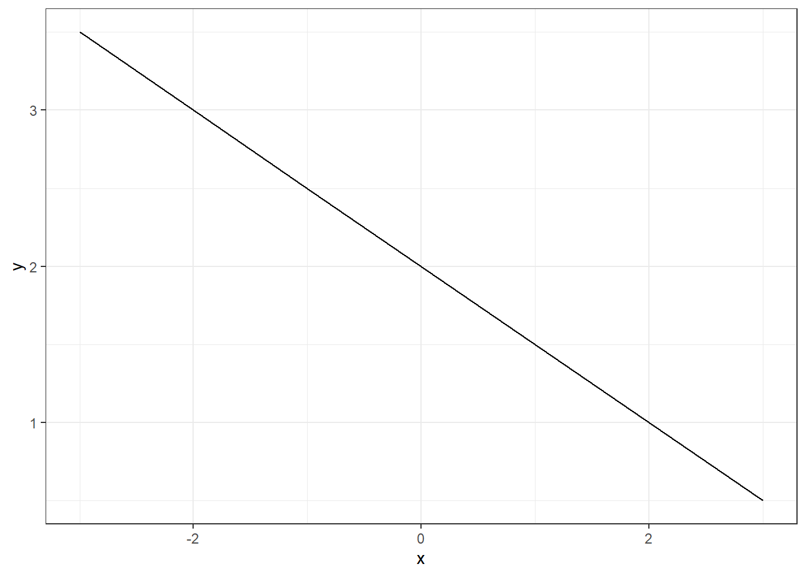
En este primer tema, empezaremos por instalar el software necesario para el análisis estadístico y la visualización de datos, y luego revisaremos los conceptos básicos de funciones lineales, exponenciales, logarítmicas y polinómicas, que son fundamentales para modelar y analizar fenómenos farmacéuticos. Todo estos conocimientos son cruciales para realizar cálculos precisos de dosis, desarrollar y evaluar nuevos medicamentos, así como para llevar a cabo estudios de bioequivalencia y análisis de farmacoeconomía.
Es fundamental utilizar un software especializado que simplifique la resolución de problemas y optimice el análisis estadístico de datos. Estas herramientas no solo agilizan los cálculos y procesamientos complejos, sino que también mejoran la precisión y fiabilidad de los resultados obtenidos. Además, permiten una redacción más clara y estructurada de informes, facilitando la presentación de resultados de manera profesional y efectiva.
En este curso utilizaremos el software jamovi (interfaz gráfica que emplea como base R). R es un entorno de programación estadística de código abierto que ofrece una amplia gama de funciones y paquetes para el análisis de datos y la generación de gráficos. Jamovi es una herramienta más accesible que nos permitirá centrarnos en el análisis y la interpretación de datos, en lugar de en la sintaxis de programación.
Instalar R es muy sencillo; pero es conveniente que dispongáis de su versión más reciente y que regularmente lo pongáis al día. Los pasos a realizar en Windows o Mac OS X para instalar su última versión son los siguientes:
Si sois usuarios de Windows, acceded a la página web de la CRAN y pulsad sobre el enlace Download R for Windows. A continuación, entrad en el enlace base, descargad R y seguid las instrucciones de instalación del documento Installation and other instructions que encontraréis en esa misma página.
Si sois usuarios de Mac OS X, acceded a la página web de la CRAN y pulsad sobre el enlace Download R for Mac OS X. A continuación, descargad el fichero .pkg correspondiente y, una vez descargado, abridlo y seguid las instrucciones del Asistente de Instalación.
Si trabajáis con Ubuntu o Debian, para instalar la última versión de R basta que ejecutéis en una terminal, estando conectados a Internet, la siguiente instrucción:
sudo aptitude install r-baseCuando instaláis R para Windows o Mac OS X, con él también se os instala una interfaz gráfica que se abrirá al abrir la aplicación y en la que podréis trabajar.
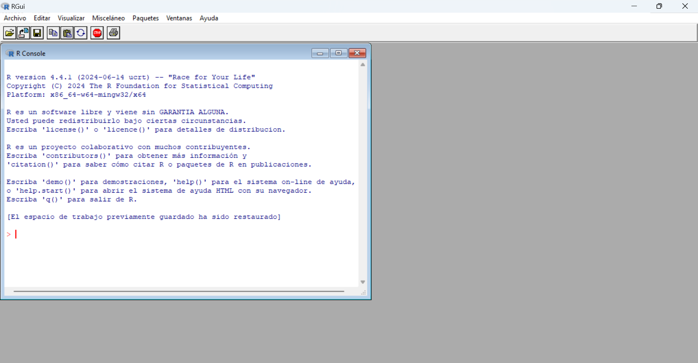
La instalación para Linux no lleva una interfaz por defecto, así que sus usuarios tienen que trabajar con R en la terminal (ejecutando R para iniciar una sesión) o instalar aparte una interfaz. Independientemente de todas estas posibilidades, en este curso usaremos RStudio como interfaz gráfica de usuario de R para todos los sistemas operativos.
R version 4.4.1 (2024-06-14 ucrt) – “Race for Your Life” Copyright (C) 2024 The R Foundation for Statistical Computing Platform: x86_64-w64-mingw32/x64
R es un software libre y viene sin GARANTIA ALGUNA. Usted puede redistribuirlo bajo ciertas circunstancias. Escriba ‘license()’ o ‘licence()’ para detalles de distribucion.
R es un proyecto colaborativo con muchos contribuyentes. Escriba ‘contributors()’ para obtener más información y ‘citation()’ para saber cómo citar R o paquetes de R en publicaciones.
Escriba ‘demo()’ para demostraciones, ‘help()’ para el sistema on-line de ayuda, o ‘help.start()’ para abrir el sistema de ayuda HTML con su navegador. Escriba ‘q()’ para salir de R.
Para que nuestra interfaz con R sea agradable, podemos usar varias aplicaciones disponibles, como Rstudio, Visual Studio Code o Jamovi. Por facilidad usaremos Jamovi
Según la pagina de Jamovi, y en una traducción al castellano usando Google translate obtenemos:
Estadísticas simplificadas: Jamovi es una nueva hoja de cálculo estadística de “tercera generación”. Diseñada desde cero para que sea fácil de usar, Jamovi es una alternativa atractiva a productos estadísticos costosos como SPSS y SAS.
Integración con R: Jamovi está construido sobre el lenguaje estadístico R, lo que le brinda acceso a lo mejor que la comunidad estadística tiene para ofrecer. ¿Le gustaría el código R para sus análisis? Jamovi también puede proporcionárselo.
Gratuito y abierto: Jamovi siempre será gratuito y abierto: ese es uno de nuestros valores fundamentales, porque Jamovi está hecho por la comunidad científica, para la comunidad científica.
Adicional a esto, instalaremos el software, siguiendo las instrucciones que aparecen en el botón Download and install jamovi onto your computer
Luego de la instalación debe aparecer en su busqueda de windows.
Y nos aparecerá esta interfaz para trabajar.
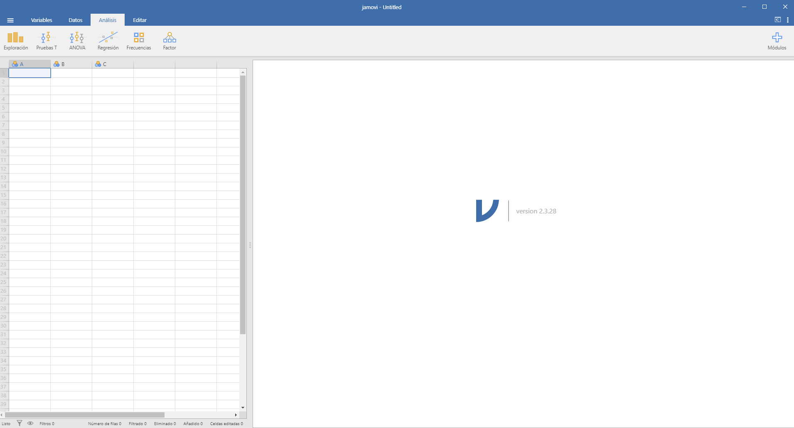
En geometría analítica y álgebra elemental, una función lineal es una función polinómica de primer grado, es decir, una función de una variable (normalmente esta variable se denota con \(x\), que puede ser escrita como la suma de términos de la forma \[f(x)=mx+b\] donde \(m\) determina la pendiente o inclinación de la recta, y la constante \(b\) determina el punto de corte de la recta con el eje vertical \(y\).
En Farmacia es útil observar la relación entre dosis y respuesta:
library(tidyverse)
x = seq(-3,3)
y = 2-0.5*x
datos = data.frame(x, y)
datos %>% ggplot(aes(x=x, y=y))+
geom_line()+theme_bw()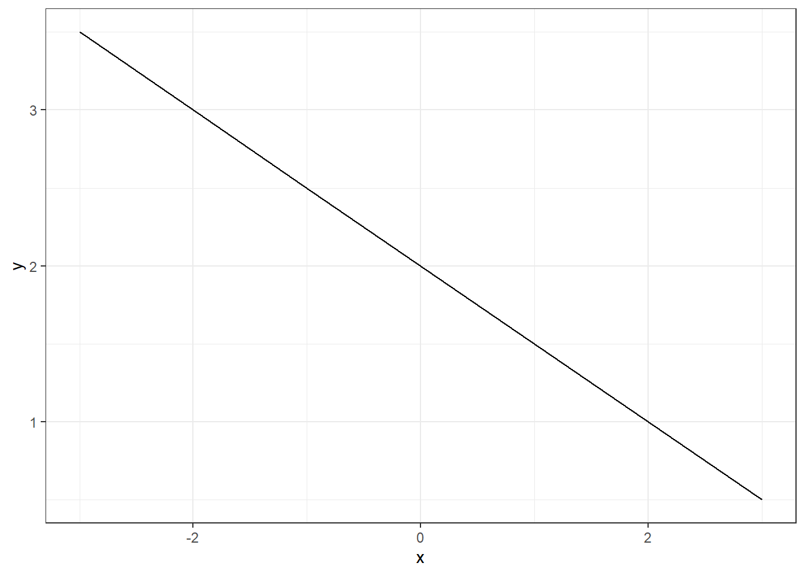
Una función exponencial es una función matemática de la forma \[f(x) = a \cdot b^x\],
donde:
Estas funciones son comunes en situaciones de crecimiento o decrecimiento rápido, como el crecimiento poblacional, la desintegración radiactiva, y el interés compuesto.
Consideremos una población de bacterias que se duplica cada hora. Si inicialmente hay 100 bacterias, podemos modelar el crecimiento de la población con la función exponencial:
\[P(t) = 100 \cdot 2^t\]
Aquí:
x = seq(-3,3, 0.01)
y = 100*2^x
datos = data.frame(x, y)
datos %>% ggplot(aes(x=x, y=y))+
geom_line()+theme_bw()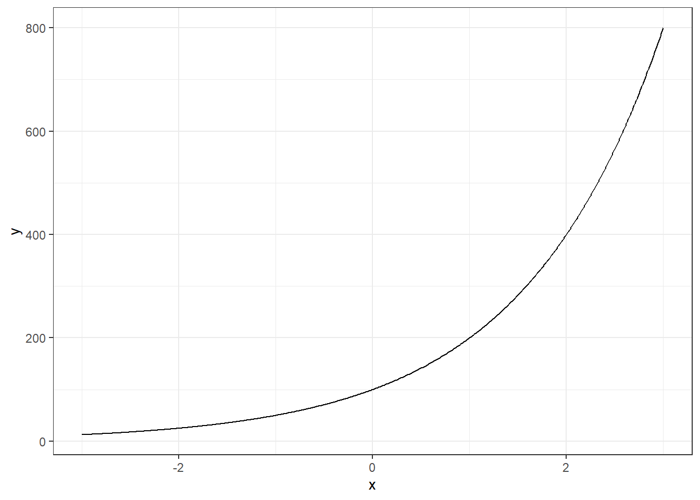
x = seq(-3,3, 0.01)
y = 100*exp(x)
datos = data.frame(x, y)
datos %>% ggplot(aes(x=x, y=y))+
geom_line()+theme_bw()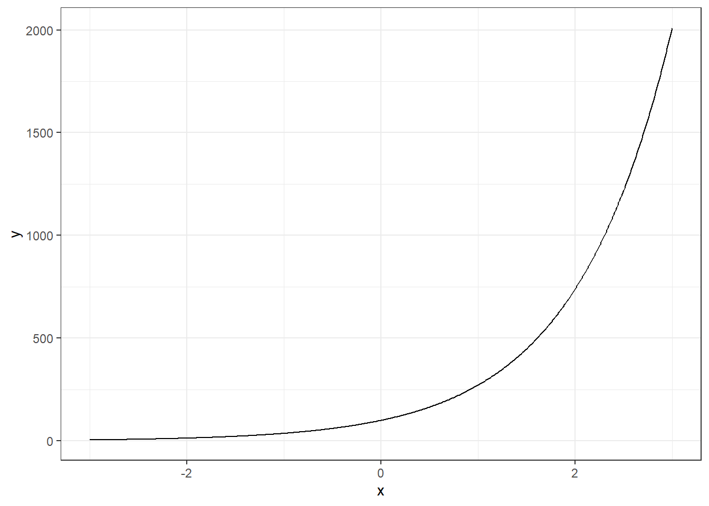
Es muy importante reconocer el número $e$ 2.7182818 como la base más usada para tranajar con funciones exponenciales. Esto se debe a la propiedad siguiente: \[y = ab^x= e^{ln(ab^x)}=e^{xln b + a}=e^ae^{xln b}=\tilde{a}e^{\tilde{b}x}\]
Una función logarítmica es la inversa de una función exponencial. Si tenemos una función exponencial de la forma \(y=b^x\), donde \(b\) es la base y \(x\) es el exponente, la función logarítmica correspondiente es \(x=\log_b(y)\).
El logaritmo de un número \(y\) con base \(b\) es el exponente al cual hay que elevar la base \(b\) para obtener \(y\). Matemáticamente, esto se representa como:
\[log_b(y) = x \Leftrightarrow b^x = y\]
En el contexto de la farmacia, las bases más comunes son \(e\) (el número de Euler, aproximadamente 2.718) y \(10\), dando lugar a los logaritmos naturales (\(\ln(x)\)) y logaritmos en base 10 (\(\log_{10}(x)\)), respectivamente.
Las propiedades básicas de los logaritmos son especialmente útiles para simplificar y resolver ecuaciones complejas:
\(\log_b(1) = 0\) para cualquier base \(b\).
Producto: \(\log_b(xy) = \log_b(x) + \log_b(y)\).
Cociente: \(\log_b(x/y) = \log_b(x) - \log_b(y)\).
Potencias: \(\log_b(x^p) = p \cdot \log_b(x)\).
Cambio de base: \(\log_b(x) = \frac{\log_a(x)}{\log_a(b)}\).
Las funciones logarítmicas son ampliamente utilizadas en diversos aspectos de la ciencia farmacéutica:
Farmacocinética: Los logaritmos se utilizan para analizar cómo los medicamentos se distribuyen, metabolizan y eliminan en el cuerpo. Por ejemplo, la fórmula de eliminación de primer orden de un fármaco se representa mediante una función exponencial, y el tiempo de eliminación o la vida media se calculan usando logaritmos naturales.
pH y Química Farmacéutica: En química, los logaritmos son fundamentales para calcular el pH, que se define como el logaritmo negativo de la concentración de iones de hidrógeno: \[pH = -\log_{10}([H^+])\] Este concepto es clave para entender la estabilidad y solubilidad de los fármacos, así como para desarrollar soluciones que mantengan un pH constante en formulaciones farmacéuticas.
Estudios de bioequivalencia: Se comparan diferentes formulaciones de un mismo medicamento, el uso de logaritmos facilita el análisis de concentraciones plasmáticas a lo largo del tiempo, proporcionando una mejor comprensión de la absorción y distribución de los fármacos.
Escalas y Dosificación: Los logaritmos se utilizan para interpretar datos que cubren un amplio rango de valores, como las curvas dosis-respuesta, donde la relación entre la concentración de un medicamento y su efecto biológico es no lineal y puede ser mejor representada en una escala logarítmica.
Consideremos un ejemplo práctico en el que se necesita determinar el tiempo necesario para reducir la concentración de un medicamento en sangre a la mitad (vida media). Supongamos que la eliminación del fármaco sigue una cinética de primer orden, es decir, la concentración \[C(t) = C_0 \cdot e^{-kt}\] Donde \(C_0\) es la concentración inicial, \(k\) es la constante de eliminación y \(t\) es el tiempo.
La vida media (\(t_{1/2}\)) se define como el tiempo necesario para que la concentración del fármaco disminuya a la mitad de su valor inicial. Entonces, para un fármaco con cinética de primer orden, la vida media se calcula como:
\[t_{1/2} = \frac{\ln(2)}{k}\]
Una función polinomial de grado 2, también conocida como función cuadrática, tiene la forma \(f(x) = ax^2 + bx + c\), donde:
La gráfica de una función cuadrática es una parábola que puede abrirse hacia arriba (si \(a\) es positivo) o hacia abajo (si \(a\) es negativo).
x = seq(-3,3, 0.01)
y = 2+0.5*x-0.4*x^2
datos = data.frame(x, y)
datos %>% ggplot(aes(x=x, y=y))+
geom_line()+theme_bw()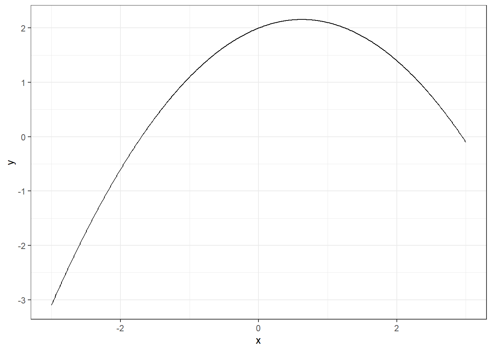
x = seq(-10,10, 0.01)
y = 2+0.5*x-0.4*x^2 +0.5*x^3-0.002*x^5
datos = data.frame(x, y)
datos %>% ggplot(aes(x=x, y=y))+
geom_line()+theme_bw()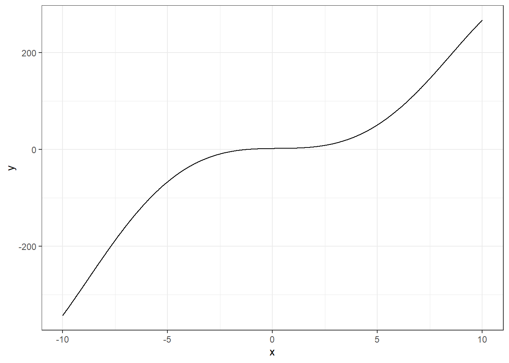
Para recordar factorización, ¿qué sucede si graficamos la siguiente función? \[y=(x-2)(x+1.5)(x-0.5)(x+3)(x+2)(x-4)\]
x = seq(-3,4, 0.01)
y = (x-2)*(x+1.5)*(x-0.5)*(x+3)*(x+2)*(x-4)
datos = data.frame(x, y)
datos %>% ggplot(aes(x=x, y=y))+
geom_line()+theme_bw()+
geom_hline(yintercept = 0)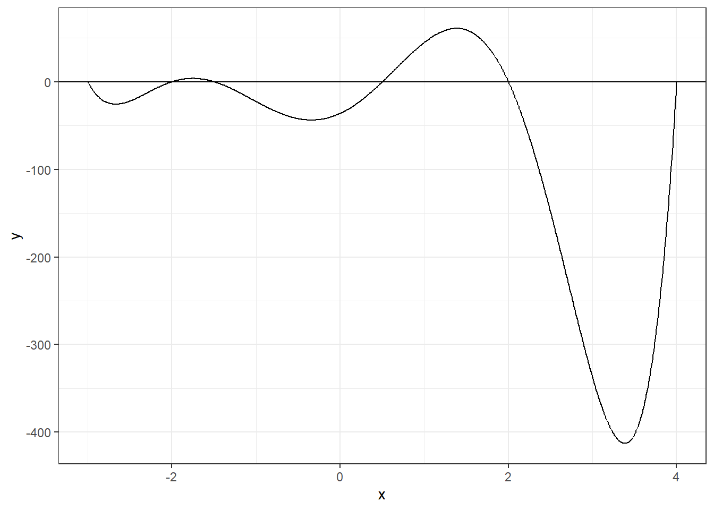
Formad grupos de 1, 2 o 3 integrantes.
Trabajaréis con los datos que aparecen en el enlace. Abrimos el enlace y con click derecho –> Guardar como y seguimos las instrucciones.
Estos datos son tomados de la investigación sobre calentamiento global del Global Carbon Project. Allí se encontrará más información por si os interesa. Vamos a introducir los gráficos de dispersión y la visualización de posibles relaciones entre variables cuantitativas.
Seguiremos los siguientes pasos.
Con la opción abrir, importamos la base de datos en JAMOVI.
Verificamos que todas las variables estén cargadas
Reproduciremos esta gráfica de dispersión. ¿Cómo se realiza la gráfica? ¿De los tipos de funciones, cuál se ajustaria mejor?
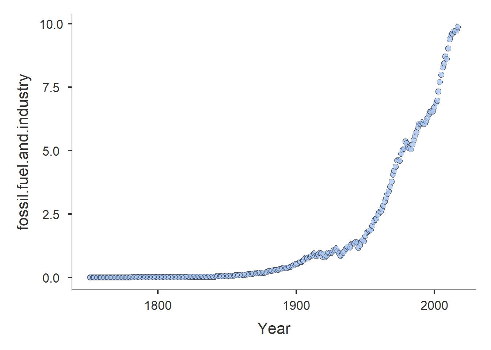
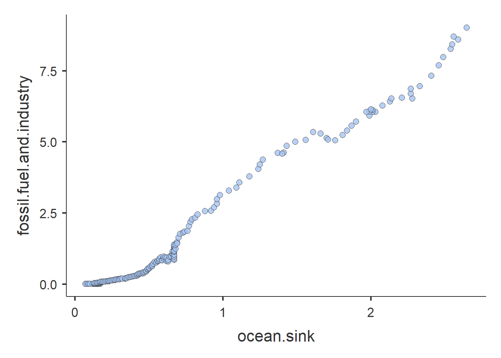
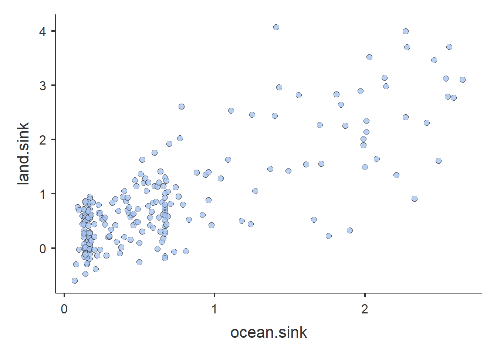